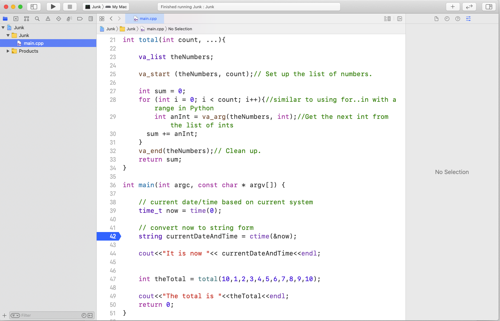
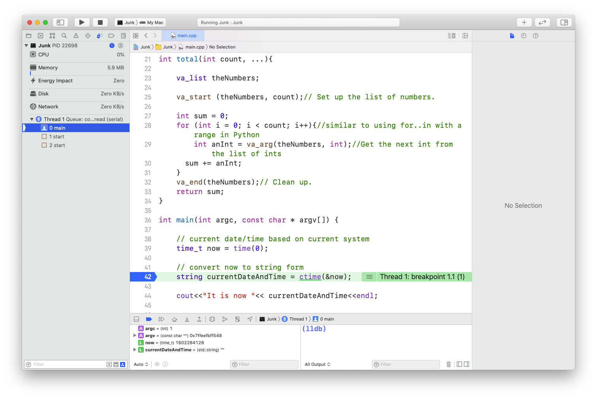

Debugging Your Code
Each of your IDE's, Visual Studio or Xcode, have tools built into them to make the creation and debugging of your code easier. Your task is to experience and understand not only how the stepwise debugger for your IDE works, but to see how it can help you when you have a logic error in your code. In other words, when your code isn't doing what you think it should, you use the stepwise debugger to find out what it is actually doing so you can track down the flaw in your thinking and code. Once you've found the flaw, you can brainstorm about how to change your code so it works as you intended.
There will be many actions you will take described for you based on which IDE you use. Read and follow them all. To start with, download the files we'll play with to help you learn how to use the stepwise debugger. Once you've got the zip file downloaded, unzip it.
Place holder.
Run Xcode and create a new project, following the same process you did the reading, called learning_debugging. Double-click the learning.cpp file and copy the contents of the file. Then select the main.cpp file in your project and remove the code you find there. Then paste in the code from learning.cpp that you copied. There is code in the learning.cpp file that will look strange to you. Don't try to fully understand it right now. Each of the things you see will be explained later. For now, just focus on completing and understanding the following actions.
Start by clicking on the number 34 on the left of the center pane of the Xcode window. This area is called 'the gutter' and shows you the line numbers for your code. You will see a blue indicator show up in the gutter. This indicator is showing you where a 'break point' has just been set in the code. Breakpoints are how you temporarily pause the code's execution so you can see what is actually going on in the code rather than what you think might be going on. You are now ready to use Xcode's built-in stepwise debugger and should see this.  Now click the triangular run button in the upper-left-hand of the window. This will start the compilation process and run your code for you.
After the compilation process completes, the application will run up to the breakpoint on line 34. 
What you now see is a bounded green selection including all the code for line 34. At this point in time, line 34 has not executed. Let's make it execute. On the left-hand side of the top part of the bottom pane that just showed up, you will see a bar with a bent arrow over it. It looks kind of like an squinty eye with a weird eyebrow. When you move your mouse over it, without clicking, a help message pops up letting you know this is the 'step over' button. Each time you click this button, the highlighted line of code executes. Let's give it a go. Click the step over button.
The first thing you'll notice is that the highlighter has moved to the next line of code. Now you know Xcode is waiting to extecute that line. Next, move your mouse over 'currentDateAndTime' in the code. As you do, it gets outlined and the value of this variable is displayed. Handy!! Now you don't have to guess what the value is. If you look in the left-hand part of the bottom pane, you will also see this same variable with its value. You can use which ever way you like to keep track of the values of any variable you create in your code.
Click the step over button again. Now line 36 has executed. In the bottom-right pane of Xcode is the console. There you see "It is now " followed by the current date and time. You use cout in C++ to print out debug statements. Whether you choose to use a debug statement or the stepwise debugger is situationally dependent. Your instructor, and your own experience, help you decide when it is best to use which option.
The debugger is now 'stopped' on line 39. Line 39 is different. While you will learn much more about this later, what you see in line 39 is a call to a C++ function that returns a value. That value is stored in the 'theTotal' variable. Now...if you were to (please don't) click the step over button again, you would then see the sum of the numbers 1 through 10 in the theTotal variable, but we are going to do something much more interesting.
Next to the step over button, there is another button. This one is a bar with an arrow pointing down to it. Move your mouse over it and a help message pops up letting you know that this is the 'step into' button. Go ahead and click it.
Wow! The highlighted line of code jumped to line 17! That's because you stepped into, instead of over, the total C++ function. Now, as you click the step over button, you can watch the value of each number in theNumbers get added to the sum.
Eventually, the numbers have all been added to the sum and the debugger is on line 25. Move your mouse over sum or find it in the bottom-left-hand pane and you will find the total is 55. It is important to realize you know this BEFORE the function returns the value.
Click step over again, and the hightlighted code moves back to line 34. Click step over one more time and the result of the calculation, 55, is stored in the theTotal variable. With your next click, cout prints out the next debug statement including the value 55.
Noobs and pro's all use the stepwise debugger. When your code is acting up it lets you see EXACTLY what your code is doing instead of thinking you know what it is doing. Rule number one of debugging your code is, "Never assume you know what your code is doing." If you follow this rule and use the stepwise debugger, your code debugging time will drop dramatically.
Play around with this a little bit. Change the numbers being passed to the total function and see what happens.